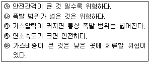
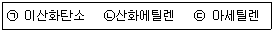
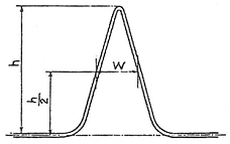

가스산업기사 (2015-03-08 기출문제)
1과목: 연소공학
1. 공기압축기의 흡입구로 빨려 들어간 가연성 증기가 압축되어 그 결과로 큰 재해가 발생하였다. 이 경우 가연성 증기에 작용한 기계적인 발화원으로 볼 수 있는 것은?
- 충격
- 마찰
- 단열압축
- 정전기
(정답률: 86%)

2. 다음 중 연소속도에 영향을 미치지 않는 것은?
- 관의 단면적
- 내염표면적
- 염의 높이
- 관의 염경
(정답률: 84%)
3. 고체연료에 있어 탄화도가 클수록 발생하는 성질은?
- 휘발분이 증가한다.
- 매연발생이 많아진다.
- 연소속도가 증가한다.
- 고정탄소가 많아져 발열량이 커진다.
(정답률: 67%)
4. 폭발에 대한 설명으로 틀린 것은?
- 폭발한계란 폭발이 일어나는데 필요한 농도의 한계를 의미한다.
- 온도가 낮을 때는 폭발 시의 방열속도가 느려지므로 연소범위는 넓어진다.
- 폭발시의 압력을 상승시키면 반응속도는 증가한다.
- 불활성기체를 공기와 혼합하면 폭발범위는 좁아진다.
(정답률: 81%)
5. 다음 보기는 가스의 폭발에 관한 설명이다. 옳은 내용으로만 짝지어 진 것은?

- ㉰, ㉱, ㉲
- ㉯, ㉰, ㉱, ㉲
- ㉯, ㉰, ㉲
- ㉮, ㉯, ㉰, ㉲
(정답률: 87%)
6. 메탄 50v%, 에탄 25v%, 프로판 25v%가 섞여 있는 혼합기체의 공기 중에서의 연소하한계(v%)는 얼마인가?(단, 메탄, 에탄, 프로판의 연소하한계는 각각 5v%, 3v%, 2.1v%이다.)
- 2.3
- 3.3
- 4.3
- 5.3
(정답률: 79%)
7. 활성화에너지가 클수록 연소반응속도는 어떻게 되는가?
- 빨라진다
- 활성화 에너지와 연소반응속도는 관계가 없다.
- 느려진다.
- 빨라지다가 점차 느려진다.
(정답률: 71%)
8. 액체연료의 연소에 있어서 1차 공기란?
- 착화에 필요한 공기
- 연료의 무화에 필요한 공기
- 연소에 필요한 계산상 공기
- 화격자 아래쪽에서 공급되어 주로 연소에 관여하는 공기
(정답률: 71%)
9. 열역학법칙 중 '어떤 계의 온도를 절대온도 0K까지 내릴 수 없다'에 해당하는 것은?
- 열역학 제0법칙
- 열역학 제1법칙
- 열역학 제2법칙
- 열역학 제3법칙
(정답률: 77%)
10. 이산화탄소 40v%, 질소 40v%, 산소 20v%로 이루어진 혼합기체의 평균분자량은 약 얼마인가?
- 17
- 25
- 35
- 42
(정답률: 77%)
11. 정상운전 중에 가연성가스의 점화원이 될 전기불꽃, 아크 등의 발생을 방지하기 위하여 기계적, 전기적 구조상 또 온도상승에 대해서 안전도를 정가시킨 방폭구조는?
- 내압방폭구조
- 압력방폭구조
- 안전증방폭구조
- 본질안전방폭구조
(정답률: 84%)
12. 시안화수소의 위험도(H)는, 약 얼마인가?
- 5.8
- 8.8
- 11.8
- 14.8
(정답률: 70%)
13. 이상연소 현상인 리프팅(Lifting)의 원인이 아닌 것은?
- 버너 내의 압력이 높아져 가스가 과다 유출할 경우
- 가스압이 이상 저하한다든지 노즐과 콕크 등이 막혀 가스량이 극히 적게 될 경우
- 공기 및 가스의 양이 많아져 분출량이 증가한 경우
- 버너가 낡고 염공이 막혀 염공의 유효면적이 작아져 버너 내압이 높게 되어 분출속도가 빠르게 되는 경우
(정답률: 78%)
14. 내용적 5m3의 탱크에 압력 6㎏/cm2, 건성도 0.98의 습윤 포화증기를 몇 kg 충전할 수 있는가? (단, 이 압력에서의 건성포화증기의 비용적은 0.278m3/㎏이다.)
- 3.67
- 11.01
- 14.68
- 18.35
(정답률: 37%)
15. 상온, 표준대기압 하에서 어떤 혼합기체의 각 성분에 대한 부피가 각각 CO2 20%, N2 20%, O2 40%, Ar 20%이면 이 혼합기체 중 CO2 분압은 약 몇 ㎜Hg인가?
- 152
- 252
- 352
- 452
(정답률: 50%)
16. 연료 1㎏을 완전 연소시키는데 소요되는 건공기의 질량은 0.232㎏=O0/A0으로 나타낼 수 있다. 이때 A0가 의미하는 것은?
- 이론산소량
- 이론공기량
- 실제산소량
- 실제공기량
(정답률: 85%)
17. 기체의 압력이 클수록 액체 용매에 잘 용해된다는 것을 설명한 법칙은?
- 아보가드로
- 게이뤼삭
- 보일
- 헨리
(정답률: 76%)
18. 이상기체에서 정적비열(CV) 정압비열(CP)과의 관계로 옳은 것은?
- CP - CV = R
- CP＋CV = R
- CP＋CV = 2R
- CP - CV = 2R
(정답률: 89%)
19. 액체연료의 연소형태 중 램프등과 같이 연료를 심지로 빨아올려 심지의 표면에서 연소시키는 것은?
- 액면연소
- 증발연소
- 분무연소
- 등심연소
(정답률: 88%)
20. 다음 중 강제점화가 아닌 것은?
- 가전(加電)점화
- 열면점화(Hot Surface Ignition)
- 화염점화
- 자기점화(Self Ignition, Auto Ignition)
(정답률: 89%)
2과목: 가스설비
21. 비중이 1.5인 프로판이 입상 30m일 경우의 압력손실은 약 몇 Pa인가?
- 130
- 190
- 256
- 450
(정답률: 55%)
22. 고압원통형 저장탱크의 지지방법 중 횡형탱크의 지지 방법으로 널리 이용되는 것은?
- 새들형(Saddle형)
- 지주형(Leg형)
- 스커트형(Skirt형)
- 평판형(Flat Plate형)
(정답률: 79%)
23. 정압기의 기본구조 중 2차 압력을 감지하여 그 2차 압력의 변동을 메인밸브로 전하는 부분은?
- 다이어프램
- 조정밸브
- 슬리브
- 웨이트
(정답률: 84%)
24. 1단감압식준저압조정기의 입구압력과 조정압력으로 맞는 것은?
- 입구압력 : 0.07~1.56MPa, 조정압력 : 2.3~3.3kPa
- 입구압력 : 0.07~1.56MPa, 조정압력 : 5~30kPa 이내에서 제조자가 설정한 기준압력의 ±20%
- 입구압력 : 0.1~1.56MPa, 조정압력 : 2.3~3.3kPa
- 입구압력 : 0.1~1.56MPa, 조정압력 : 5~30kPa 이내에서 제조자가 설정한 기준압력의 ±20%
(정답률: 58%)
25. 단면적이 300mm2인 봉을 매달고 600㎏의 추를 그 자유단에 달았더니 재료의 허용인장응력에 도달하였다. 이봉의 인장강도가 400㎏/cm2이라면 안전율은 얼마인가?
- 1
- 2
- 3
- 4
(정답률: 76%)
26. 가연성 고압가스 저장탱크 외부에는 은백색 도료를 바르고 주위에서 보기 쉽도록 가스 명칭을 표시한다. 가스 명칭 표시의 색상은?
- 검정색
- 녹색
- 적색
- 황색
(정답률: 75%)
27. 고압가스설비에 대한 설명으로 옳은 것은?
- 고압가스 저장탱크에는 환형 유리관 액면계를 설치한다.
- 고압가스 설비에 장치하는 압력계의 최고 눈금은 상용압력의 1.1배 이상 2배 이하 이어야 한다.
- 저장능력이 1000톤 이상인 액화산소 저장탱크의 주위에는 유출을 방지하는 조치를 한다.
- 소형저장탱크 및 충전용기는 항상 50℃ 이하를 유지한다.
(정답률: 71%)
28. 전용보일러실에 반드시 설치해야 하는 보일러는?
- 밀폐식 보일러
- 반밀폐식 보일러
- 가스보일러를 옥외에 설치하는 경우
- 전용 급기구 통을 부착시키는 구조로 검사에 합격한 강제 배기식 보일러
(정답률: 68%)
29. 탱크로리에서 저장 탱크로 LP 가스 이송 시 잔가스 회수가 가능한 이송법은?
- 차압에 의한 방법
- 액송펌프 이용법
- 압축기 이용법
- 압축가스 용기 이용법
(정답률: 75%)
30. 3톤 미만의 LP가스 소형저장탱크에 대한 설명으로 틀린 것은?
- 동일 장소에 설치하는 소형저장탱크의 수는 6기 이하로 한다.
- 화기와의 우회거리는 3m 이상을 유지한다.
- 지상 설치식으로 한다.
- 건축물이나 사람이 통행하는 구조물의 하부에 설치하지 아니한다.
(정답률: 83%)
31. 원심펌프의 유량 1m3/min, 전양정 50m, 효율이 80%일 때, 회전수율 10% 증가시키려면 동력은 몇 배가 필요한가?
- 1.22
- 1.33
- 1.51
- 1.73
(정답률: 58%)
32. 다음 중 정특성, 동특성이 양호하며 중압용으로 주로 사용되는 정압기는?
- Fisher식
- KRF식
- Reynolds식
- ARF식
(정답률: 85%)
33. 고압가스 용기 충전구의 나사가 왼나사인 것은?
- 질소
- 암모니아
- 브롬화메탄
- 수소
(정답률: 75%)
34. 고압가스 배관의 최소두께 계산 시 고려하지 않아도 되는 것은?
- 관의 길이
- 상용압력
- 안전율
- 재료의 인장강도
(정답률: 69%)
35. 매설배관의 경우에는 유기물질 재료를 피복재로 사용하면 방식이 된다. 이 중 타르 에폭시 피복재의 특성에 대한 설명 중 틀린 것은?
- 저온에서도 경화가 빠르다.
- 밀착성이 좋다.
- 내마모성이 크다.
- 토양응력에 강하다.
(정답률: 67%)
36. 재료 내·외부의 결함 검사방법으로 가장 적당한 방법은?
- 침투탐상법
- 유침법
- 초음파탐상법
- 육안검사법
(정답률: 84%)
37. 고압가스 설비 및 배관의 두께 산정 시 용접이음매의 효율이 가장 낮은 것은?
- 맞대기 한면 용접
- 맞대기 양면 용접
- 플러그 용접을 하는 한면 전두께 필렛 겹치기 용접
- 양면 전두께 필렛 겹치기 용접
(정답률: 72%)
38. 도시가스의 원료로서 적당하지 않은 것은?
- LPG
- Naphtha
- Natural gas
- Acetylene
(정답률: 84%)
39. 외경(D)이 216.3mm, 구경 두께 5.8mm인 200 A의 배관용 탄소강관이 내압 0.99MPa 을 받았을 경우에 관에 생긴 원주방향 응력은 약 몇 MPa인가?
- 8.8
- 17.5
- 26.3
- 25.1
(정답률: 58%)
40. 고압가스 관이음으로 통상적으로 사용되지 않는 것은?
- 용접
- 플랜지
- 나사
- 리벳팅
(정답률: 71%)
3과목: 가스안전관리
41. 액체염소가 누출된 경우 필요한 조치가 아닌 것은?
- 물살포
- 가성소다 살포
- 탄산소다 수용액 살포
- 소석회 살포
(정답률: 83%)
42. 고압가스 제조허가의 종류가 아닌 것은?
- 고압가스 특정제조
- 고압가스 일반제조
- 고압가스 충전
- 독성가스제조
(정답률: 72%)
43. 저장탱크의 설치방법 중 위해방지를 위하여 저장 탱크를 지하에 매설할 경우 저장탱크의 주위에 무엇으로 채워야 하는가?
- 흙
- 콘크리트
- 마른모래
- 자갈
(정답률: 89%)
44. 다음 중 2중관으로 하여야 하는 독성가스가 아닌 것은?
- 염화메탄
- 아황산가스
- 염화수소
- 산화에틸렌
(정답률: 59%)
45. 고압가스 용기보관 장소에 대한 설명으로 틀린 것은?
- 용기보관 장소는 그 경계를 명시하고, 외부에서 보기 쉬운 장소에 경계표시를 한다.
- 가연성가스 및 산소 충전용기 보관실은 불연재료를 사용하고 지붕은 가벼운 재료로 한다.
- 가연성가스의 용기보관실은 가스가 누출될 때 체류 하지 아니하도록 통풍구를 갖춘다.
- 통풍이 잘 되지 아니하는 곳에는 자연환기시설을 설치한다.
(정답률: 83%)
46. 액화석유가스 저장탱크에는 자동차에 고정된 탱크에서 가스를 이입할 수 있도록 로딩암을 건축물 내부에 설치할 경우 환기구를 설치하여야 한다. 환기구 면적의 합계는 바닥면적의 얼마 이상으로 하여야 하는가?
- 1%
- 3%
- 6%
- 10%
(정답률: 69%)
47. 산소가스 설비를 수리 또는 청소를 할 때는 안전관리상 탱크 내부의 산소를 농도가 몇 % 이하로 될 때까지 계속 치환하여야 하는가?
- 22%
- 28%
- 31%
- 35%
(정답률: 74%)
48. 액화가스 저장탱크의 저장능력을 산출하는 식은? (단, Q : 저장능력(m3), W : 저장능력(㎏), P : 35℃에서 최고충전압력(MPa), V : 내용적(L), d : 상용 온도 내에서 액화가스 비중(㎏/L), C : 가스의 종류에 따르는 정수이다.)
- W = C/V
- W = 0.9dV
- Q = (10P＋1)V
- Q = (P＋2)V
(정답률: 86%)
49. 국내에서 발생한 대형 도시가스 사고 중 대구 도시가스 폭발사고의 주원인은 무엇인가?
- 내부부식
- 배관의 응력부족
- 부적절한 매설
- 공사 중 도시가스 배관 손상
(정답률: 86%)
50. 다음 보기의 가스 중 분해폭발을 일으키는 것을 모두 고른 것은?

- ㉡
- ㉢
- ㉠, ㉡
- ㉡,㉢
(정답률: 77%)
51. 압축기는 그 최종단에, 그 밖의 고압가스 설비에는 압력이 상용압력을 초과한 경우에 그 압력을 직접 받는 부분마다 각각 내압시험 압력의 10분의 8이하의 압력에서 작동되게 설치하여야 하는 것은?
- 역류방지밸브
- 안전밸브
- 스톱밸브
- 긴급차단장치
(정답률: 82%)
52. 차량에 고정된 고압가스 탱크에 설치하는 방파판의 개수는 탱크 내용적 얼마 이하마다 1개씩 설치해야 하는가?
- 3m3
- 5m3
- 10m3
- 20m3
(정답률: 69%)
53. 액화석유가스 제조설비에 대한 기밀시험 시 사용되지 않는 가스는?
- 질소
- 산소
- 이산화탄소
- 아르곤
(정답률: 75%)
54. 지상에 설치하는 액화석유가스 저장탱크의 외면에는 어떤 색의 도료를 칠하여야 하는가?
- 은백색
- 노란색
- 초록색
- 빨간색
(정답률: 83%)
55. 고압가스 충전용기의 운반기준으로 틀린 것은?
- 밸브가 돌출한 충전용기는 캡을 부착시켜 운반한다.
- 원칙적으로 이륜차에 적재하여 운반이 가능하다.
- 충전용기와 위험물안전관리법에서 정하는 위험물과는 동일차량에 적재, 운반하지 않는다.
- 차량의 적재함을 초과하여 적재하지 않는다.
(정답률: 88%)
56. 이동식 부탄연소기의 올바른 사용방법은?
- 바람의 영향을 줄이기 위해서 텐트 안에서 사용한다.
- 효율을 높이기 위해서 두 대를 나란히 연결하여 사용 한다.
- 사용하는 그릇은 연소기의 삼발이보다 폭이 좁은 것을 사용한다.
- 연소기 운반 중에는 용기를 내부에 보관한다.
(정답률: 86%)
57. 고압가스용 차량에 고정된 초저온 탱크의 재검사 항목이 아닌 것은?
- 외관검사
- 기밀검사
- 자분탐상검사
- 방사선투과검사
(정답률: 52%)
58. 액화석유가스 저장탱크의 설치기준으로 틀린 것은?
- 저장탱크에 설치한 안전밸브는 지면으로 부터 2m이 상의 높이에 방출구가 있는 가스방출관을 설치한다.
- 지하저장탱크를 2개 이상 인접 설치하는 경우 상호 간에 1m이상의 거리를 유지한다.
- 저장탱크의 지면으로 부터 지하저장탱크의 정상부까지의 깊이는 60㎝이상으로 한다.
- 저장탱크의 일부를 지하에 설치한 경우 지하에 묻힌 부분이 부식되지 않도록 조치한다.
(정답률: 70%)
59. 고압가스 일반제조의 시설기준 및 기술기준으로 틀린 것은?
- 가연성가스 제조시설의 고압가스설비 외면으로부터 다른 가연성가스 제조시설의 고압가스설비까지의 거리는 5m이상으로 한다.
- 저장설비 주위 5m 이내에는 화기 또는 인화성 물질을 두지 않는다.
- 5m3이상의 가스를 저장하는 것에는 가스방출장치를 설치한다.
- 가연성가스 제조시설의 고압가스설비 외면으로부터 산소 제조시설의 고압가스설비까지의 거리는 10m 이상으로 한다.
(정답률: 67%)
60. 아세틸렌을 용기에 충전하는 때의 다공도는?
- 65% 이하
- 65~75%
- 75~92%
- 92% 이상
(정답률: 85%)
4과목: 가스계측
61. 가스미터 중 실측식에 속하지 않는 것은?
- 건식
- 회전식
- 습식
- 오리피스식
(정답률: 72%)
62. 다음 중 온도측정 범위가 가장 좁은 온도계는?
- 알루멜-크로멜
- 구리-콘스탄탄
- 수은
- 백금-백금·로듐
(정답률: 64%)
63. 습도를 측정하는 가장 간편한 방법은?
- 노점을 측정
- 비점을 측정
- 밀도를 측정
- 점도를 측정
(정답률: 71%)
64. 가스미터 설치 시 입상배관을 금지하는 가장 큰 이유는?
- 겨울철 수분 응축에 따른 밸브, 밸브시트 동결방지를 위하여
- 균열에 따른 누출방지를 위하여
- 고장 및 오차 발생 방지를 위하여
- 계량막 밸브와 밸브시트 사이의 누출방지를 위하여
(정답률: 86%)
65. 적외선분광분석계로 분석이 불가능한 것은?
- CH4
- CL2
- COCL2
- NH3
(정답률: 64%)
66. LPG의 성분분석에 이용되는 분석법 중 저온분류법에 의해 적용될 수 있는 것은?
- 관능기의 검출
- cis, trans의 검출
- 방향족 이성체의 분리정량
- 지방족 탄화수소의 분리정량
(정답률: 67%)
67. 벨로우즈식 압력계로 압력 측정 시 벨로우즈 내부에 압력이 가해질 경우 원래 위치로 돌아가지 않는 현상을 의미하는 것은?
- limited 현상
- bellows 현상
- end all 현상
- hysteresis 현상
(정답률: 80%)
68. 비중이 0.8인 액체의 압력이 2㎏/cm2일 때 액면높이 (head)는 약 몇 m인가?
- 16
- 25
- 32
- 40
(정답률: 49%)
69. 분별연소법 중 산화구리법에 의하여 주로 정량할 수 있는 가스는?
- O2
- N2
- CH4
- CO2
(정답률: 51%)
70. 검지가스와 누출 확인 시험지가 옳은 것은?
- 하리슨씨시약 : 포스겐
- KI전분지 : CO
- 염화파라듐지 : HCN
- 연당지 : 할로겐
(정답률: 79%)
71. 깊이 5.0m인 어떤 밀폐탱크 안에 물이 3.0m 채워져 있고 2kgf/cm2의 증기압이 작용하고 있을 때 탱크 밑에 작용하는 압력은 몇 kgf/cm2인가?
- 1.2
- 2.3
- 3.4
- 4.5
(정답률: 50%)
72. 편차의 크기에 비례하여 조절요소의 속도가 연속적으로 변하는 동작은?
- 적분동작
- 비례동작
- 미분동작
- 뱅뱅동작
(정답률: 54%)
73. 자동제어장치를 제어량의 성질에 따라 분류한 것은?
- 프로세스제어
- 프로그램제어
- 비율제어
- 비례제어
(정답률: 55%)
74. 블록선도의 구성요소로 이루어진 것은?
- 전달요소, 가합점, 분기점
- 전달요소, 가감점, 인출점
- 전달요소 가합점, 인출점
- 전달요소, 가감점, 분기점
(정답률: 72%)
75. 계측기기의 감도(Sensitivity)에 대한 설명으로 틀린 것은?
- 감도가 좋으면 측정시간이 길어진다.
- 감도가 좋으면 측정범위가 좁아진다.
- 계측기가 측정량의 변화에 민감한 정도를 말한다.
- 측정량의 변화를 지시량의 변화로 나누어 준 값이다.
(정답률: 67%)
76. 흡수분석법 중 게겔법에 의한 가스분석의 순서로 옳은 것은?
- CO2, O2, C2H2, C2H4, CO
- CO2, C2H2, C2H4, O2, CO
- CO, C2H2, C2H4, O2, CO2
- CO, O2, C2H2, C2H4, CO2
(정답률: 65%)
77. 서브기구에 해당되는 제어로서 목표치가 임의의 변화를 하는 제어로 옳은 것은?
- 정치제어
- 캐스케이드제어
- 추치제어
- 프로세스제어
(정답률: 60%)
78. 크로마토그래피의 피크가 그림과 같이 기록되었을 때 피크의 넓이(A)를 계산하는 식으로 가장 적합한 것은?

- 1/4Wh
- 1/2Wh
- Wh
- 2Wh
(정답률: 68%)
79. 액면계로부터 가스가 방출되었을 때 인화 또는 중독의 우려가 없는 장소에 주로 사용하는 액면계는?
- 플로트식 액면계
- 정전용량식 액면계
- 슬립튜브식 액면계
- 전기저항식 액면계
(정답률: 59%)
80. 다이어프램 가스미터의 최대유량이 4m3/h일 경우 최소유량의 상한 값은?
- 4L/h
- 8L/h
- 16L/h
- 25L/h
(정답률: 50%)